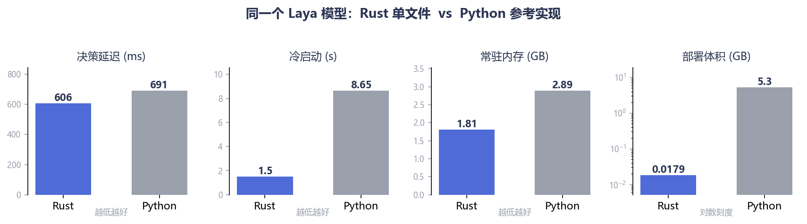
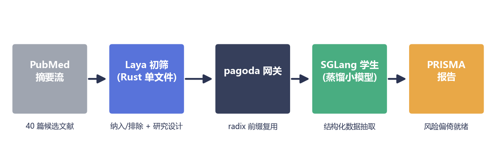
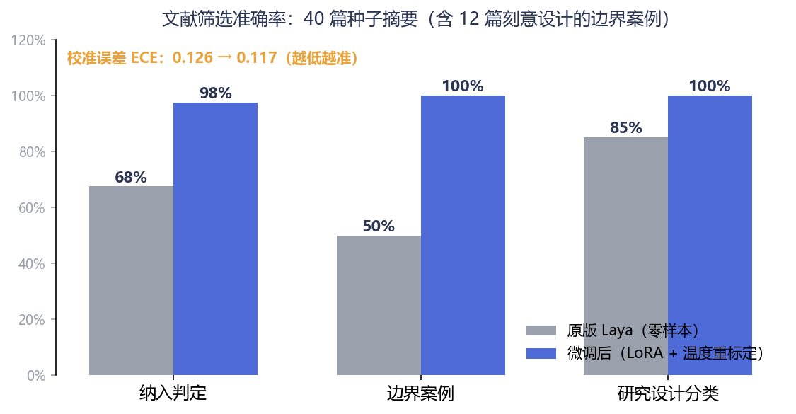
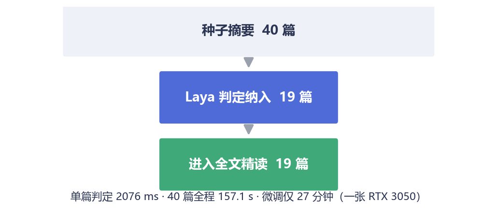

Rust 重写的 Laya · 一张 RTX 3050 · 一次系统综述初筛的全流程实录
做过 Meta 分析的朋友都知道，PRISMA 流程里最耗人的不是统计，而是初筛：
检索式往 PubMed 里一扔，哗啦啦回来几千篇摘要。方法学要求两个人独立筛选，一篇一篇点"纳入 / 排除"，意见不一致的还要拉第三个人仲裁。按一篇摘要 30 秒算，3000 篇就是两个人各 25 个小时——盯着标题摘要看到眼瞎的 25 个小时。
这个环节偏偏还最不能出错：漏纳一篇合格文献，整个综述的结论都可能被审稿人推翻。
那能不能让大模型来读？能，但直接上 GPT/Claude 有三个现实问题：
我们想要的其实是一个只做判断题、不说废话的小模型。最近我们把它折腾出来了——而且是纯 Rust 版。
Laya 是 Convo AI 开源的一个 0.4B"决策模型"。它不走"生成一段文字"那条路，而是把决策建模成一组带类型的提问：
{
"state": "Title: Aerobic exercise training and glycemic control...",
"questions": {
"include": { "type": "noul",
"instructions": "该研究是否为符合 PICO 的随机对照试验……" },
"design": { "type": "choice",
"instructions": "这项研究的设计类型是？",
"criteria": { "rct": "随机对照试验", "cohort": "观察性队列", "…": "…" } }
}
}
一次 /decide 调用，返回每个问题的选项概率分布 + 置信度：
{ "answers": {
"include": { "noul": 0.94, "confidence": 0.91 },
"design": { "choice": "rct", "confidence": 0.88 } } }
noul: 0.94 读作"P(该研究符合纳入标准) = 0.94"——判定用阈值，仲裁用置信度，
低置信的篇目自动转人工，正好对上方法学里"分歧仲裁"那一环。
没有废话，没有格式漂移，概率可以直接进下游流水线。不生成一个字，自然也没有 prefill/decode 的成本结构——一次前向，两道题，完事。
原版 Laya 是 Python 的：PyTorch + transformers，轻装上阵也要一个 5.3 GB 的虚拟环境。我们做 pagoda 的初衷，是把 SGLang 那套服务化思想（radix 前缀缓存、结构化约束、持续批处理）用 Rust 重新实现一遍——Laya 顺手成了第一个"全家桶住户"。
同一张 RTX 3050 上的实测：

Rust vs Python
scp 过去就跑；直接上岗之前，我们构造了一个真实任务当"入职考试"：
PICO：成人 2 型糖尿病；结构化运动 vs 常规护理；结局指标 HbA1c；只纳入 RCT。
40 篇摘要当考题——14 篇标准 RCT（该收）、14 篇明显不相关（该拒），还有 12 篇是刻意埋的"边界案例"：混合了 1 型/2 型人群的、quasi-random 的、只发了会议摘要的、post-hoc 亚组分析的……这些正是真人筛选员也会吵起来的那类。
零样本的原版 Laya 成绩：纳入判定 67.5%，边界案例只有 50%——难的篇目约等于抛硬币，达不到"替人干活"的标准。（研究设计分类倒是不错，85%。）
训练方案有意做得非常"轻"：

筛选流水线
训练之后还有一个关键小动作：温度重标定。Laya 输出的是概率，但"概率"不等于"靠谱程度"——神经网络出了名的自我感觉良好。我们在留出集上做网格搜索，给每类问题找最优温度系数，让"置信度 0.9"尽量真的意味着十次对九次。本例中标定把校准误差（ECE）从 0.154 压到 0.117——幅度不算惊人，但这个动作的意义在于：流水线里每一环节的置信度，从此是可以拿来当阈值用的真概率。

准确率对比
| 指标 | 原版零样本 | 微调 + 标定后 |
|---|---|---|
| 纳入判定（40 篇） | 67.5% | 97.5% |
| 边界案例（12 篇） | 50.0% | 100% |
| 研究设计分类 | 85.0% | 100% |
| 校准误差 ECE（留出集） | 0.126 | 0.117 |
（诚实声明：40 篇中 34 篇参与过训练，这是"能否学会这套筛选标准"的能力验证；6 篇完全未见的留出集上趋势一致：边界案例 67%→100%，设计分类 83%→100%。）
训练耗时 27 分钟。换句话说：一顿午饭的时间，把一个通用决策模型培训成了你这个课题的专科筛选员——而且培训完直接导出成 Rust 单文件能加载的检查点（843 MB，含 tokenizer 与标定好的温度表），--model-dir 指过去就上线。

筛选漏斗
初筛只是第一道工序。完整的流水线长这样：
/stats 里清清楚楚：61 次转发、2 次按科室路由）；还有个计划外的实战彩蛋：压测期间网关有 36 次调不通 Laya（CPU 被筛选流量打满），网关按设计 fail-open 放行并在 /stats 记账——一次故障演练都没专门做，生产细节自己冒出来了。
一个值得一提的细节：系统综述要求"双人独立筛选 + 分歧仲裁"。在我们的实现里，这被翻译成——同一份权重，checkpoint 分叉出两个评审（不同 LoRA / 不同温度），分歧的篇目自动路由给人工。方法学要求一字不改，成本从一整个人力变成一次前向。
整套东西都在 GitHub 上：github.com/quantz8a/pagoda
pagoda-hf/：Laya 的 Rust 推理 + 本文的筛选服务；distill/train_laya.py：30 分钟微调脚本（含温度重标定），换一批种子摘要就是你的课题；docs/guide/：从零开始的小白文档，一共 17 篇。许可证是 Apache-2.0：随便用、随便改、可商用，唯一的要求是保留版权声明（NOTICE 文件里有完整的出处链）。我们的想法很简单：基础设施的价值在于被采用，而不是被锁起来。
下一篇我们聊聊：当初筛规模从 40 篇变成 4000 篇，radix 缓存和持续批处理能把账单压到多低。
本文所有数字均来自 RTX 3050（8GB）上的真实测量，脚本与原始数据见仓库。